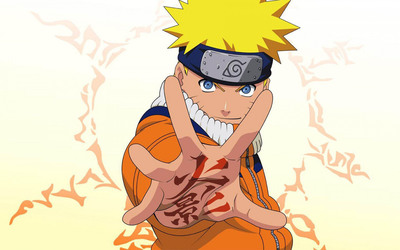

每一部电影都是一个故事，一种经历，一种新的体会。各种类型的电影我都会看，比如恐怖的，如闪灵，午夜凶铃。也有悬疑的，看不见的客人，调音师。 温情一点的，情书，小偷家族，魂断威尼斯。剧情向的放牛班的春天，穿条纹睡衣的男孩。看电影是一种很美妙的体验。
火影忍者是我很喜欢的一部动漫，里面每个角色都是很鲜活的，都是各有各自的特色。
热血冲动的鸣人，永远充满继续努力的动力，珍重友情。当面对着劝说放弃佐助（他的朋友）
“想作为忍者活下去，就得更加聪明一点”
“如果聪明是指这些的话，就让我笨一辈子吧”
这是我很喜欢的一个动漫人物
“我本来想过着随便当个忍者，随便赚点钱...然后和不美又不丑的普通女人结婚， 生两个小孩，第一个是女孩，
第二个是男孩...等长女结婚，儿子也能独当一面的时候， 就从忍者的工作退休... 之后...每天过着下将棋或围棋的悠闲隐居生活...然后比自己的老婆还要早老死... ”
这就是他的想法，将自己的生活规划地很家常，在充满热血的忍者世界似乎就是那么与众不同。他给人一种很懒散的感觉，口头禅差不多就是“面倒くさい”，看上去是一个怕麻烦的样子，
毫无斗志，对什么都不太上心，但是他对同伴的关怀却一点不差，对村子的责任心一点都不少。
有勇有谋，追击我爱罗时，能够迅速分析敌我形式，并做好牺牲自己的准备。追击佐助时，作为队长，对同伴重伤的事情耿耿于怀;
天才头脑，每次作战他一定是布置计划的那个。
我最喜欢的一个角色
他是一个很有实力，有很强的安全感（或者说什么情况下都很靠谱）的一个人物
他的生活很苦，失去了父亲，失去了老师，他并没有就这样被压倒或者被征服，并没有因此而厌世或者成为叛忍或者打算毁灭村子报复世界。
而是微微的笑着，继续把他份内的工作尽职尽责的做好。哪怕他所倾心教育的学生都一个一个的另投高明。
哪怕他最后弱得只能在战场上当自己学生的肉盾。
严肃说出“我不会让我同伴被杀”的是他，笑着告诉佐助“我珍惜的人都已经死了”的也是他，很温暖的一个人，将仇恨痛苦自己埋起来，用最大的温暖去对待别人。
听音乐就是来调剂自己的，依据不同的心情会选择不同的歌听